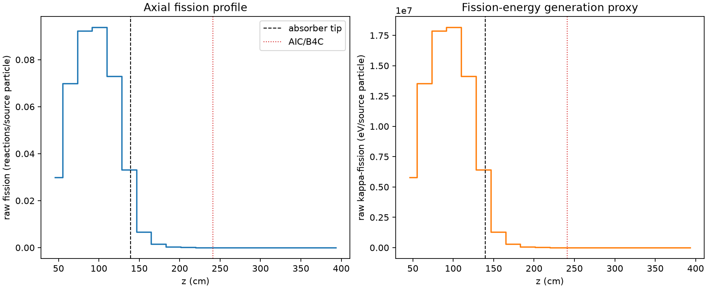
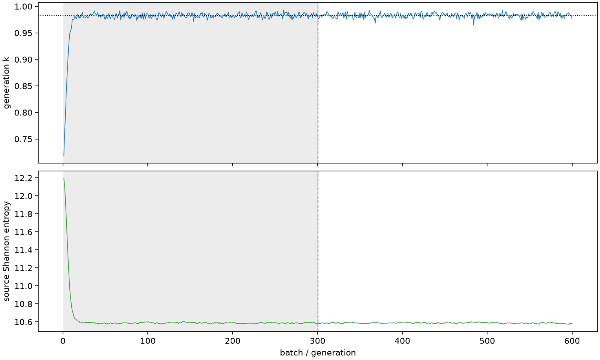

| field | value |
|---|---|
| experiment | V2-STAGE_256_OGRENCI_03-0012 |
| k | 0.9829006714690328 |
| MC standard error | 0.00017864859679242006 |
| seconds | 1219.0941718329996 |
| acceptance | not_assessed |
| convergence | review_required |
Completed is output integrity only; physical and statistical review required. Zero tallies do not prove zero production or zero uncertainty.
| diagnostic | value |
|---|---|
| geometric fuel voxels | 5280 |
| zero fission tally voxels | 1731 |
| low signal fuel voxels | 2634 |
| low signal fission share | 7.125020597476961e-05 |
| low signal kappa share | 7.12839551862379e-05 |
| important fission share | 0.9501195327971056 |
| previous filter included | 2646 |
| duration estimate s | 1562.5173488400023 |
| actual minus estimate s | -343.4231770070028 |
| fission relative MC error | statistics |
|---|---|
| all_geometric_fuel | {"voxels": 5280, "positive_mean_voxels": 3549, "zero_mean_voxels": 1731, "undefined_relative_error_voxels": 1731, "median": 0.01726962997748231, "p95": 0.9309308288376875, "maximum": 1.0000000000000002} |
| low_signal | {"voxels": 2634, "positive_mean_voxels": 903, "zero_mean_voxels": 1731, "undefined_relative_error_voxels": 1731, "median": 0.5618369921123773, "p95": 1.0, "maximum": 1.0000000000000002} |
| important_95pct | {"voxels": 1482, "positive_mean_voxels": 1482, "zero_mean_voxels": 0, "undefined_relative_error_voxels": 0, "median": 0.005364524579617468, "p95": 0.008359269349296847, "maximum": 0.009733383607819609} |
| outside_previous_filter | {"voxels": 2634, "positive_mean_voxels": 903, "zero_mean_voxels": 1731, "undefined_relative_error_voxels": 1731, "median": 0.5618369921123773, "p95": 1.0, "maximum": 1.0000000000000002} |
| kappa_fission relative MC error | statistics |
|---|---|
| all_geometric_fuel | {"voxels": 5280, "positive_mean_voxels": 3549, "zero_mean_voxels": 1731, "undefined_relative_error_voxels": 1731, "median": 0.017236097508100047, "p95": 0.9313991798350629, "maximum": 1.0000000000000002} |
| low_signal | {"voxels": 2634, "positive_mean_voxels": 903, "zero_mean_voxels": 1731, "undefined_relative_error_voxels": 1731, "median": 0.5600442811349726, "p95": 1.0, "maximum": 1.0000000000000002} |
| important_95pct | {"voxels": 1482, "positive_mean_voxels": 1482, "zero_mean_voxels": 0, "undefined_relative_error_voxels": 0, "median": 0.005357077741498749, "p95": 0.008348097789001894, "maximum": 0.009718267478647215} |
| outside_previous_filter | {"voxels": 2634, "positive_mean_voxels": 903, "zero_mean_voxels": 1731, "undefined_relative_error_voxels": 1731, "median": 0.5600442811349726, "p95": 1.0, "maximum": 1.0000000000000002} |
| axial bin | fission share | kappa-fission share |
|---|---|---|
| 1 | 0.07459416955672332 | 0.07459695150580112 |
| 2 | 0.1744375858507903 | 0.17443339100735297 |
| 3 | 0.23045165495331774 | 0.23044615493149267 |
| 4 | 0.2339413753741654 | 0.2339357029242238 |
| 5 | 0.18189944814663989 | 0.181895684949028 |
| 6 | 0.08281134626604915 | 0.08281769714963418 |
| 7 | 0.01663529460798868 | 0.016642834783834725 |
| 8 | 0.003980243389897956 | 0.003982104289881645 |
| 9 | 0.0009471291089116431 | 0.0009475724956179633 |
| 10 | 0.00022971647933820233 | 0.00022983606798880098 |
| 11 | 5.9233290221958804e-05 | 5.925860284203492e-05 |
| 12 | 1.0558286629743862e-05 | 1.0564930997847763e-05 |
| 13 | 2.0656268967136696e-06 | 2.066909437869192e-06 |
| 14 | 1.759184007563092e-07 | 1.762957100591688e-07 |
| 15 | 3.1440285123014515e-09 | 3.1561563969304966e-09 |
| 16 | 0.0 | 0.0 |
| 17 | 0.0 | 0.0 |
| 18 | 0.0 | 0.0 |
| 19 | 0.0 | 0.0 |
| 20 | 0.0 | 0.0 |
Histories include the inactive-to-active transition at batch 300. kappa-fission approximates fission energy production, not total heat deposition.

